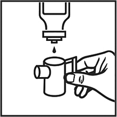
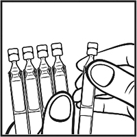
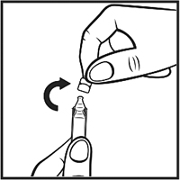
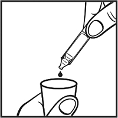

|
 |
| АСТМАСОЛ® БРОНХО (ASTMASOL BRONCHO) ipratropium bromide, fenoterol раствор д/ингаляций | ||||||||||
|
Клинико-фармакологическая группа: Бронхолитический препарат Номер и дата регистрации: ЛП-004988 от 15.08.18 Код ATX: R03AL01 |
Владелец регистрационного удостоверения: зарегистрировано и произведено Представительство: | |||||||||
Форма выпуска, состав и упаковка Раствор для ингаляций (тюбик-капельница А или флакон) в виде прозрачной, бесцветной или слегка окрашенной жидкости; приложенный растворитель (ампула Б) - прозрачная, бесцветная жидкость; готовый раствор (тюбик-капельница А + ампула Б) - прозрачная, бесцветная или слегка окрашенная жидкость.
Вспомогательные вещества: бензалкония хлорид - 0.1 мг, динатрия эдетата дигидрат - 0.5 мг, натрия хлорид - 8.8 мг, 1М раствор хлористоводородной кислоты или 1М раствор натрия гидроксида - до рН 3.0-4.0, вода д/и - до 1 мл. Состав растворителя (на 1 мл, ампула Б): натрия хлорид - 9 мг, вода д/и - до 1 мл. 20 мл - флаконы темного стекла (1) с пробкой-капельницей - пачки картонные. | ||||||||||
| ||||||||||
Описание препарата основано на официально утвержденной инструкции по применению и утверждено компанией-производителем для издания 2023 г. | ||||||||||
Фармакологическое действие |
Фармакокинетика |
Показания |
Режим дозирования |
Побочное действие |
Противопоказания |
Беременность и лактация |
Особые указания |
Передозировка |
Лекарственное взаимодействие |
Условия хранения и сроки годности |
Условия реализации
Фармакологическое действие
Препарат содержит два компонента, обладающих бронхолитической активностью: ипратропия бромид - м-холиноблокатор и фенотерол - бета2-адреномиметик. Бронходилатация при ингаляционном введении ипратропия бромида обусловлена, главным образом, местным, а не системным антихолинергическим действием. У пациентов с бронхоспазмом, связанным с хроническими обструктивными заболеваниями легких (хронический бронхит и эмфизема легких), значительное улучшение функции легких (увеличение ОФВ1 и ПСВ на 15% и более) отмечено в течение 15 мин, максимальный эффект достигался через 1-2 ч и продолжался у большинства пациентов до 6 ч после введения. Ипратропия бромид не оказывает отрицательного влияния на секрецию слизи в дыхательных путях, мукоцилиарный клиренс и газообмен. Фенотерол избирательно стимулирует β2-адренорецепторы в терапевтической дозе. Стимуляция β1-адренорецепторов происходит при использовании высоких доз. Фенотерол расслабляет гладкую мускулатуру бронхов и сосудов и противодействует развитию бронхоспастических реакций, обусловленных влиянием гистамина, метахолина, холодного воздуха и аллергенов (реакции гиперчувствительности немедленного типа). Сразу после введения фенотерол блокирует высвобождение медиаторов воспаления и бронхообструкции из тучных клеток. Кроме того, при использовании фенотерола в более высоких дозах отмечалось усиление мукоцилиарного клиренса. Бета-адренергическое влияние препарата на сердечную деятельность, такое как увеличение частоты и силы сердечных сокращений, обусловлено сосудистым действием фенотерола, стимуляцией β2-адренорецепторов сердца, а при использовании доз, превышающих терапевтические, стимуляцией β1-адренорецепторов. Как и при использовании других бета-адренергических препаратов отмечалось удлинение интервала QTс при использовании высоких доз. Клиническая значимость этого проявления не выяснена. Тремор является наиболее частым нежелательным эффектом при использовании агонистов β-адренорецепторов. При совместном применении этих двух действующих веществ бронхорасширяющий эффект достигается путем воздействия на различные фармакологические мишени. Указанные вещества дополняют друг друга, в результате усиливается спазмолитический эффект на мышцы бронхов и обеспечивается широта терапевтического действия при бронхо-легочных заболеваниях, сопровождающихся констрикцией дыхательных путей. Взаимодополняющее действие таково, что для достижения желаемого эффекта требуется более низкая доза β-адренергического компонента, что позволяет индивидуально подобрать эффективную дозу при практически полном отсутствии побочных эффектов. Фармакокинетика
Терапевтический эффект комбинации ипратропия бромида и фенотерола является следствием его местного действия в дыхательных путях. Развитие бронходилатации не прямо пропорционально фармакокинетическим показателям действующих веществ. После ингаляции в легкие обычно попадает (в зависимости от лекарственной формы и метода ингаляции) 10-39% от вводимой дозы препарата. Оставшаяся часть дозы осаждается на мундштуке, в ротовой полости и ротоглотке. Часть дозы, осевшая в ротоглотке, проглатывается и поступает в ЖКТ. Часть дозы препарата, попадающая в легкие, быстро достигает системного кровотока (в течение нескольких минут). Отсутствуют доказательства того, что фармакокинетика комбинированного препарата отличается от таковой каждого из отдельных компонентов. Фенотерол Проглоченная часть дозы метаболизируется до сульфатных конъюгатов. Абсолютная биодоступность при приеме внутрь низкая (около 1.5%). После в/в введения свободный и конъюгированный фенотерол составляют в 24-часовом анализе мочи соответственно 15% и 27% от введенной дозы. Общая системная биодоступность ингалируемой дозы фенотерола оценивается в 7%. Кинетические параметры, описывающие распределение фенотерола, рассчитаны по концентрации в плазме после в/в введения. После в/в введения профили плазменная концентрация-время могут быть описаны 3-камерной фармакокинетической моделью, согласно которой Т1/2 составляет примерно 3 ч. В этой 3-камерной модели кажущийся объем распределения фенотерола в равновесном состоянии (Vdss) составляет приблизительно 189 л (~2.7 л/кг). Около 40% фенотерола связывается с белками плазмы. Доклинические исследования показали, что фенотерол и его метаболиты не проникают через ГЭБ. Общий клиренс фенотерола - 1.8 л/мин, почечный клиренс - 0.27 л/мин. Суммарная почечная экскреция (в течение 2 дней) меченой изотопом дозы (включая исходное соединение и все метаболиты) составляла после в/в введения 65%. Общая меченая изотопом доза, выделявшаяся через кишечник, составляла после в/в введения 14.8%, после приема внутрь 40.2% в течение 48 ч. Общая меченая изотопом доза, выделявшаяся через почки, составляла после приема внутрь около 39%. Ипратропия бромид Суммарная почечная экскреция (в течение 24 ч) исходного соединения составляет примерно 46% от величины в/в вводимой дозы, менее 1% от величины дозы, применяемой внутрь, и примерно 3-13% от величины ингаляционной дозы препарата. Исходя из этих данных, рассчитано, что общая системная биодоступность ипратропия бромида, применяемого внутрь и ингаляционно, составляет 2% и 7-28% соответственно. Таким образом, влияние проглатываемой части ипратропия бромида на системное воздействие незначительно. Кинетические параметры, описывающие распределение ипратропия бромида, вычислялись на основании его концентраций в плазме после в/в введения. Наблюдается быстрое двухфазное снижение концентрации в плазме. Кажущийся Vdss составляет примерно 176 л (~2.4 л/кг). Препарат связывается с белками плазмы в минимальной степени (менее чем на 20%). Доклинические исследования показали, что ипратропия бромид, являющийся четвертичным производным аммония, не проникает через ГЭБ. Т1/2 в конечной фазе составляет примерно 1.6 ч. Общий клиренс ипратропия бромида составляет 2.3 л/мин, а почечный клиренс 0.9 л/мин. После в/в введения примерно 60% дозы метаболизируется путем окисления, главным образом в печени. Суммарная почечная экскреция (в течение 6 дней) меченой изотопом дозы (включая исходное соединение и все метаболиты) составляла после в/в введения 72.1%, после приема внутрь - 9.3%, а после ингаляционного применения - 3.2%. Общая меченая изотопом доза, выделявшаяся через кишечник, составляла после в/в введения 6.3%, после приема внутрь - 88.5%, а после ингаляционного применения - 69.4%. Таким образом, экскреция меченой изотопом дозы после в/в введения осуществляется, в основном, через почки. Т1/2 исходного соединения и метаболитов составляет 3.6 ч. Основные метаболиты, выводящиеся с мочой, связываются с мускариновыми рецепторами слабо и считаются неактивными. Показания
Режим дозирования
Лечение должно проводиться под медицинским наблюдением (например, в условиях стационара). Лечение в домашних условиях возможно только после консультации с врачом в тех случаях, когда быстродействующий бета-агонист в низкой дозе недостаточно эффективен. Также раствор для ингаляций может быть рекомендован пациентам в случае, когда аэрозоль для ингаляций не может использоваться или при необходимости применения более высоких доз. Дозу подбирают индивидуально, в зависимости от остроты приступа. Лечение обычно начинают с наименьшей рекомендуемой дозы и прекращают после того, как достигнуто достаточное уменьшение симптомов. Острые приступы бронхоспазма Взрослые (включая пожилых людей) и подростки старше 12 лет В зависимости от тяжести приступа дозы могут варьировать от 1 мл (20 капель) до 2.5 мл (50 капель) раствора. В особо тяжелых случаях возможно применение доз, достигающих 4 мл (80 капель). Дети в возрасте 6-12 лет В зависимости от тяжести приступа дозы могут варьировать от 0.5 мл (10 капель) до 2 мл (40 капель). Дети в возрасте младше 6 лет (масса тела которых составляет менее 22 кг) В связи с тем, что информация о применении препарата в этой возрастной группе ограничена, рекомендуется использование следующей дозы (только при условии медицинского наблюдения): 0.1 мл (2 капли) на кг массы тела, но не более 0.5 мл (10 капель). Учитывая отсутствие полной информации, препарат у детей следует применять только по назначению врача и под наблюдением взрослых. Раствор для ингаляций следует использовать только для ингаляций (с подходящим небулайзером) и не применять перорально. Лечение следует обычно начинать с наименьшей рекомендуемой дозы. Рекомендуемую дозу следует разводить 0.9% раствором натрия хлорида до конечного объема, составляющего 3-4 мл, и применять (полностью) с помощью небулайзера. Раствор препарата Астмасол® бронхо для ингаляций не следует разводить дистиллированной водой. Разведение раствора должно осуществляться каждый раз перед применением; остатки разведенного раствора следует уничтожать. Разведенный раствор следует использовать сразу после приготовления. Краткое описание действий по применению препарата во флаконе  Рис. 1 1. Подготовить небулайзер для использования. 2. Поместить содержимое флакона в резервуар небулайзера в необходимой дозе, назначенной врачом. При этом держать флакон вертикально в перевернутом положении. 3. Добавить растворитель (0.9% раствор натрия хлорида) в резервуар небулайзера до конечного объема 3-4 мл. 4. Далее следовать инструкции по применению небулайзера. Краткое описание действий по применению тюбика-капельницы А (препарат) и ампулы Б (растворитель)  Рис. 2  Рис. 3  Рис. 4 1. Подготовить небулайзер для использования. 2. Отделить тюбик-капельницу А (препарат) (рис. 2). 3. Убедившись, что раствор находится в нижней части тюбика-капельницы А (препарат), вскрыть тюбик-капельницу, вращающими движениями повернув и отделив клапан (рис. 3). 4. Поместить содержимое тюбика-капельницы А (препарат) в резервуар небулайзера в необходимой дозе, назначенной врачом (рис. 4). 5. Отделить ампулу Б (растворитель - 0.9% раствор натрия хлорида) (рис. 2). 6. Убедившись, что раствор находится в нижней части ампулы Б (растворитель - 0.9% раствор натрия хлорида), вскрыть ампулу, вращающими движениями повернув и отделив клапан (рис. 3). 7. Добавить содержимое ампулы Б (растворитель - 0.9% раствор натрия хлорида) в резервуар небулайзера до конечного объема 3-4 мл. 8. Далее следовать инструкции по применению небулайзера. Длительность ингаляции может контролироваться по расходованию разведенного раствора. Раствор препарата для ингаляций может применяться с использованием различных коммерческих моделей небулайзеров. Доза, достигающая легких, и системная доза зависят от типа используемого небулайзера и могут быть выше, чем соответствующие дозы при использовании дозированного аэрозоля (что зависит от типа ингалятора). В тех случаях, когда имеется настенный кислород, раствор лучше всего применять при скорости потока 6-8 л/мин. Необходимо следовать инструкции по применению, обслуживанию и чистке небулайзера. Побочное действие
Многие из перечисленных нежелательных эффектов могут быть следствием антихолинергических и бета-адренергических свойств препарата. Астмасол® бронхо, как и любая ингаляционная терапия, может вызывать местное раздражение. Самыми частыми побочными эффектами, о которых сообщалось в клинических исследованиях, были кашель, сухость во рту, головная боль, тремор, фарингит, тошнота, головокружение, дисфония, тахикардия, ощущение сердцебиения, рвота, повышение систолического АД и нервозность. Частота побочных реакций, которые могут возникать во время терапии, приведена в виде следующей градации: очень часто (≥1/10), часто (≥1/100, <1/10), нечасто (≥1/1000, <1/100), редко (≥1/10000, <1/1000), очень редко (<1/10000), частота неизвестна (частота не может быть оценена по доступным данным). Со стороны иммунной системы: редко - анафилактическая реакция, гиперчувствительность. Со стороны обмена веществ и питания: редко* - гипокалиемия; очень редко - повышение глюкозы в сыворотке крови. Нарушения психики: нечасто - нервозность; редко - возбуждение, ментальные нарушения. Со стороны нервной системы: нечасто - головная боль, тремор, головокружение; частота неизвестна - гиперактивность. Со стороны органа зрения: редко* - глаукома, увеличение внутриглазного давления, нарушения аккомодации, мидриаз, нечеткое зрение, боль в глазах, отек роговицы, гиперемия конъюнктивы, появление ореола вокруг предметов. Со стороны сердечно-сосудистой системы: нечасто - тахикардия, ощущение сердцебиения; редко - аритмия, фибрилляция предсердий, наджелудочковая тахикардия, ишемия миокарда. Со стороны дыхательной системы: часто - кашель; нечасто - фарингит, дисфония; редко - бронхоспазм, раздражение глотки, отек глотки, ларингоспазм*, парадоксальный бронхоспазм*, сухость глотки*. Со стороны ЖКТ: нечасто - рвота, тошнота, сухость во рту; редко - стоматит, глоссит, нарушения моторики ЖКТ, диарея, запор*, отек полости рта*, изжога. Со стороны кожи и подкожных тканей: редко - крапивница, зуд, ангионевротический отек*, гипергидроз*, сыпь, петехии. Со стороны костно-мышечной системы: редко - мышечная слабость, спазм мышц, миалгия. Со стороны почек и мочевыводящих путей: редко - задержка мочи. Лабораторные и инструментальные данные: нечасто - повышение систолического АД; редко - повышение диастолического АД. * Оценка проведена на основании верхней границы 95% доверительного интервала, рассчитанного по общей популяции пациентов. Противопоказания
С осторожностью: закрытоугольная глаукома, артериальная гипертензия, сахарный диабет, недавно перенесенный инфаркт миокарда (в течение последних 3 месяцев), заболевания сердца и сосудов, такие как хроническая сердечная недостаточность, ИБС, аортальный стеноз, выраженные поражения церебральных и периферических артерий, гипертиреоз, феохромоцитома, гиперплазия предстательной железы, обструкция шейки мочевого пузыря, муковисцидоз, II и III триместры беременности, период грудного вскармливания, детский возраст до 6 лет. Применение при беременности и кормлении грудью
Данные доклинических исследований и опыт применения комбинации ипратропия бромида и фенотерола показывают, что компоненты лекарственного препарата не оказывают негативного влияния при беременности. Следует учитывать возможность ингибирующего эффекта фенотерола на сократительную активность матки. Препарат противопоказан в I триместре беременности. Следует с осторожностью применять препарат во II и III триместрах беременности. Фенотерол проникает в грудное молоко. Данных, подтверждающих, что ипратропия бромид проникает в грудное молоко, не получено. Однако препарат следует с осторожностью назначать кормящим матерям. Отсутствуют клинические данные о влиянии фенотерола, ипратропия бромида или их комбинации на фертильность. Доклинические исследования не показали влияния ипратропия бромида и фенотерола не фертильность. Особые указания
Одышка В случае неожиданного быстрого усиления одышки (затруднений дыхания) пациенту следует без промедления обратиться к врачу. Гиперчувствительность После применения препарата могут возникнуть реакции немедленной гиперчувствительности, признаками которой, в редких случаях, могут быть: крапивница, ангионевротический отек, сыпь, бронхоспазм, отек ротоглотки, анафилактический шок. Парадоксальный бронхоспазм Препарат Астмасол® бронхо, как и другие ингаляционные препараты, способен вызвать парадоксальный бронхоспазм, который может угрожать жизни. В случае развития парадоксального бронхоспазма применение препарата следует немедленно прекратить и перейти на альтернативную терапию. Длительное применение У пациентов, страдающих бронхиальной астмой, препарат должен применяться только по мере необходимости. У пациентов с легкой формой хронической обструктивной болезни легких симптоматическое лечение может оказаться предпочтительнее регулярного применения. У пациентов с бронхиальной астмой следует помнить о необходимости проведения или усиления противовоспалительной терапии для контроля воспалительного процесса дыхательных путей и течения заболевания. Регулярное использование возрастающих доз препаратов, содержащих бета2-адреномиметики, таких как Астмасол® бронхо, для купирования бронхиальной обструкции может вызвать неконтролируемое ухудшение течения заболевания. В случае усиления бронхиальной обструкции увеличение дозы бета2-агонистов, в т.ч. препарата Астмасол® бронхо, больше рекомендуемой в течение длительного времени не только не оправдано, но и опасно. Для предотвращения угрожающего жизни ухудшения течения заболевания следует рассмотреть вопрос о пересмотре плана лечения пациента и адекватной противовоспалительной терапии ингаляционными ГКС. Другие симпатомиметические бронходилататоры следует назначать одновременно с препаратом Астмасол® бронхо только под медицинским наблюдением. Нарушение со стороны ЖКТ У пациентов, имеющих в анамнезе муковисцидоз, возможны нарушения моторики ЖКТ. Нарушения со стороны органов зрения Астмасол® бронхо следует применять с осторожностью у пациентов, предрасположенных к остроугольной глаукоме. Известны отдельные сообщения об осложнениях со стороны органа зрения (например, повышение внутриглазного давления, мидриаз, закрытоугольная глаукома, боль в глазах), развившихся при попадании ингаляционного ипратропия бромида (или ипратропия бромида в сочетании с агонистами β2-адренорецепторов) в глаза. Симптомами острой закрытоугольной глаукомы могут быть боль или дискомфорт в глазах, затуманивание зрения, появление ореола у предметов и цветных пятен перед глазами в сочетании с отеком роговицы и покраснением глаз вследствие конъюнктивальной инъекции сосудов. Если развивается любая композиция этих симптомов, показано применение глазных капель, снижающих внутриглазное давление, и немедленная консультация специалиста. Пациенты должны быть проинструктированы о правильном применении ингаляционного раствора препарата Астмасол® бронхо. Для предупреждения попадания раствора в глаза рекомендуется, чтобы раствор, используемый с помощью небулайзера, вдыхался через мундштук. При отсутствии мундштука должна использоваться плотно прилегающая к лицу маска. Особенно тщательно должны заботиться о защите глаз пациенты, предрасположенные к развитию глаукомы. Системные эффекты При следующих заболеваниях: недавно перенесенном инфаркте миокарда, сахарном диабете с неадекватным гликемическим контролем, тяжело протекающих органических заболеваниях сердца и сосудов, гипертиреозе, феохромоцитоме или обструкции мочеиспускательных путей (например, при гиперплазии предстательной железы или обструкции шейки мочевого пузыря) Астмасол® бронхо следует применять только после тщательной оценки риск/польза, особенно при использовании доз, превышающих рекомендуемые. Влияние на сердечно-сосудистую систему В постмаркетинговых исследованиях отмечались редкие случаи возникновения ишемии миокарда при приеме бета-агонистов. Пациентов с сопутствующими серьезными заболеваниями сердца (например, ИБС, аритмиями или выраженной сердечной недостаточностью), получающих Астмасол® бронхо, следует предупреждать о необходимости обращения к врачу в случае появления болей в сердце или других симптомов, указывающих на ухудшение заболевания сердца. Необходимо обращать внимание на такие симптомы как одышка и боль в груди, т.к. они могут быть как сердечной, так и легочной этиологии. Гипокалиемия При применении бета2-агонистов может возникать гипокалиемия (см. раздел "Передозировка"). У спортсменов применение препарата Астмасол® бронхо в связи с наличием в его составе фенотерола может приводить к положительным результатам тестов на допинг. Вспомогательные вещества Препарат содержит стабилизатор - динатрия эдетата дигидрат и консервант - бензалкония хлорид. Во время ингаляции эти компоненты могут вызывать бронхоспазм у чувствительных пациентов с гиперреактивностью дыхательных путей. Влияние на способность к управлению транспортными средствами и механизмами Исследования по изучению влияния препарата на способность управлять транспортными средствами и механизмами не проводились. Следует соблюдать осторожность при выполнении данных видов деятельности, т.к. возможно развитие головокружения, тремора, нарушения аккомодации глаз, мидриаза и нечеткого зрения. При возникновении указанных выше нежелательных ощущений следует воздержаться от таких потенциально опасных действий, как управление транспортными средствами и механизмами. Передозировка
Симптомы передозировки обычно связаны преимущественно с действием фенотерола. Возможно появление симптомов, связанных с избыточной стимуляцией β-адренорецепторов. Наиболее вероятно появление тахикардии, сердцебиения, тремора, повышения АД, понижения АД, увеличение различия между систолическим и диастолическим АД, стенокардии, аритмии и чувства "приливов" крови к лицу, чувства тяжести за грудиной, усиление бронхообструкции. Также наблюдались метаболический ацидоз и гипокалиемия. Возможные симптомы передозировки, обусловленные ипратропия бромидом (такие как сухость во рту, нарушения аккомодации), выражены слабо и транзиторны, что объясняется его местным применением. Лечение Необходимо прекратить прием препарата. Следует учитывать данные мониторирования кислотно-щелочного баланса крови. Рекомендуется назначение седативных средств, анксиолитических лекарственных средств (транквилизаторов), в тяжелых случаях - интенсивная терапия. В качестве специфического антидота возможно применение бета-адреноблокаторов, предпочтительнее селективных бета1-адреноблокаторов. Однако у пациентов с бронхиальной астмой или ХОБЛ следует учитывать возможность усиления бронхиальной обструкции, которая может привести к летальному исходу, под влиянием бета-адреноблокаторов и тщательно подбирать их дозу. Лекарственное взаимодействие
Длительное одновременное применение препарата с другими антихолинергическими препаратами не рекомендуется ввиду отсутствия данных. Одновременное применение других бета-адреномиметических средств, антихолинергических препаратов системного действия и ксантиновых производных (например, теофиллина) может повышать бронхорасширяющее действие препарата и приводить к усилению побочных эффектов. Возможно значительное ослабление бронхорасширяющего действия препарата при одновременном назначении бета-адреноблокаторов. Гипокалиемия, связанная с применением бета-адреномиметиков, может быть усилена одновременным назначением ксантиновых производных, ГКС и диуретиков. Этому факту следует уделять особое внимание при лечении пациентов с тяжелыми формами обструктивных заболеваний дыхательных путей. Гипокалиемия может приводить к повышению риска возникновения аритмий у пациентов, получающих дигоксин. Кроме того, гипоксия может усиливать негативное влияние гипокалиемии на сердечный ритм. В подобных случаях рекомендуется проводить мониторирование уровня калия в сыворотке крови. Следует с осторожностью назначать бета2-адренергические средства пациентам, получавшим ингибиторы МАО и трициклические антидепрессанты, т.к. эти препараты способны усиливать действие бета-адренергических средств. Ингаляции средств для общей анестезии галогенизированных углеводородных анестетиков, например, галотана, трихлорэтилена или энфлурана, могут усилить влияние бета-адренергических средств на сердечно-сосудистую систему. Совместное применение препарата с кромоглициевой кислотой и/или ГКС увеличивает эффективность терапии. |
||||||||||
Вернуться наверх |
||||||||||
Copyright © Справочник Видаль «Лекарственные препараты в России», Москва, Россия